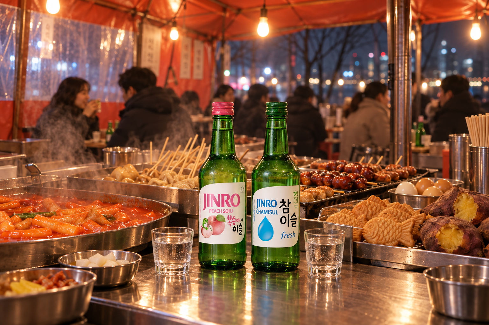
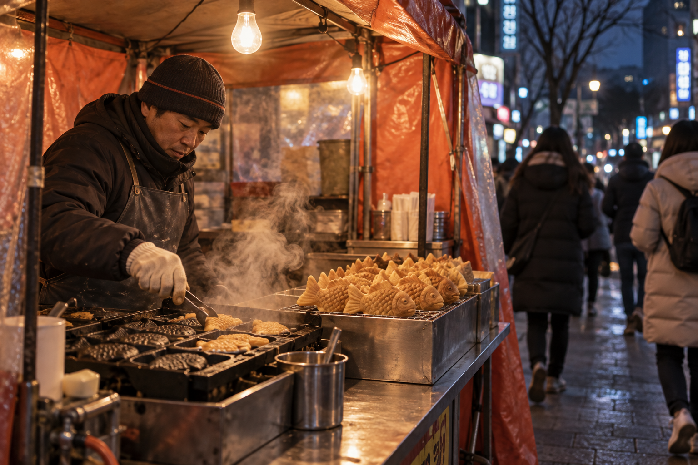
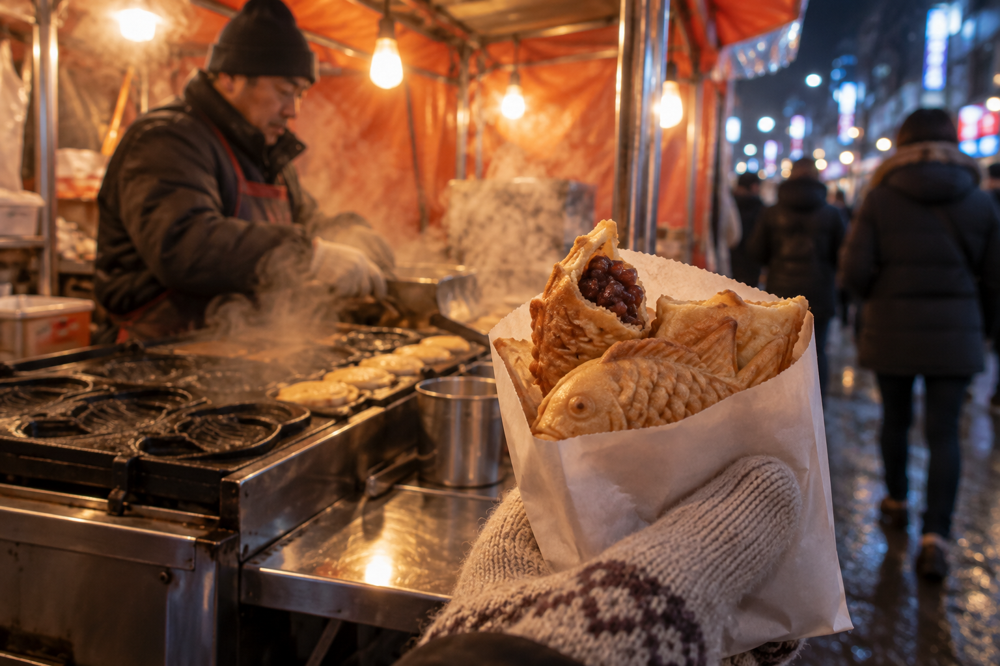
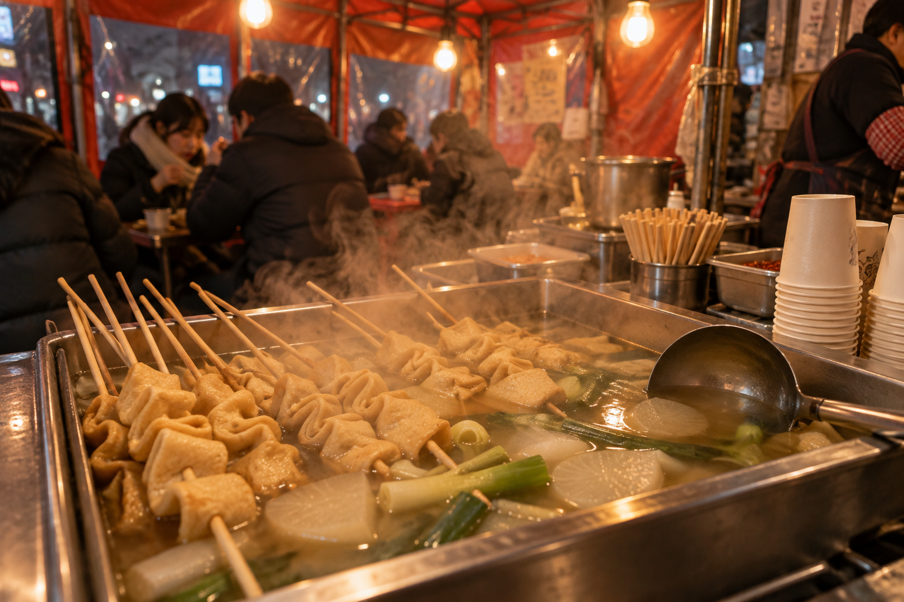
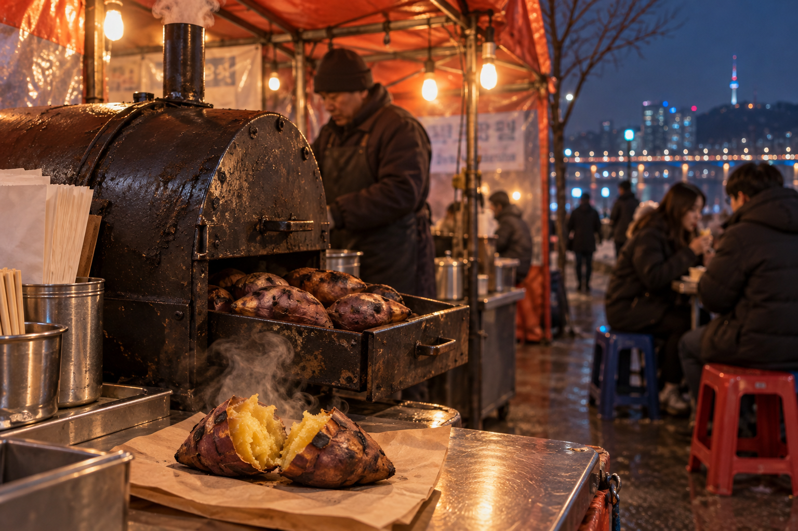
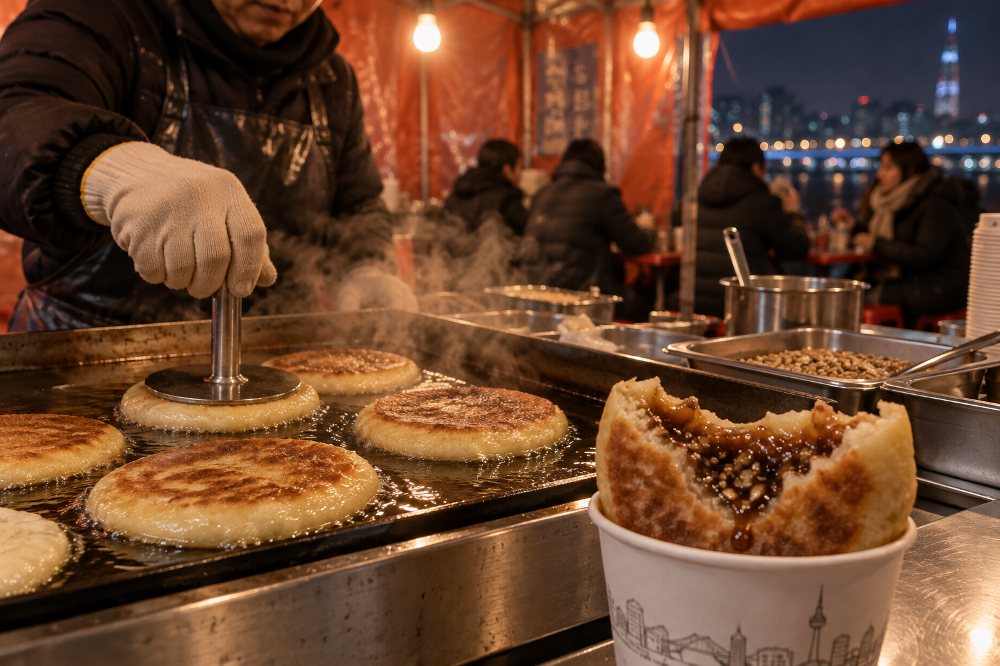
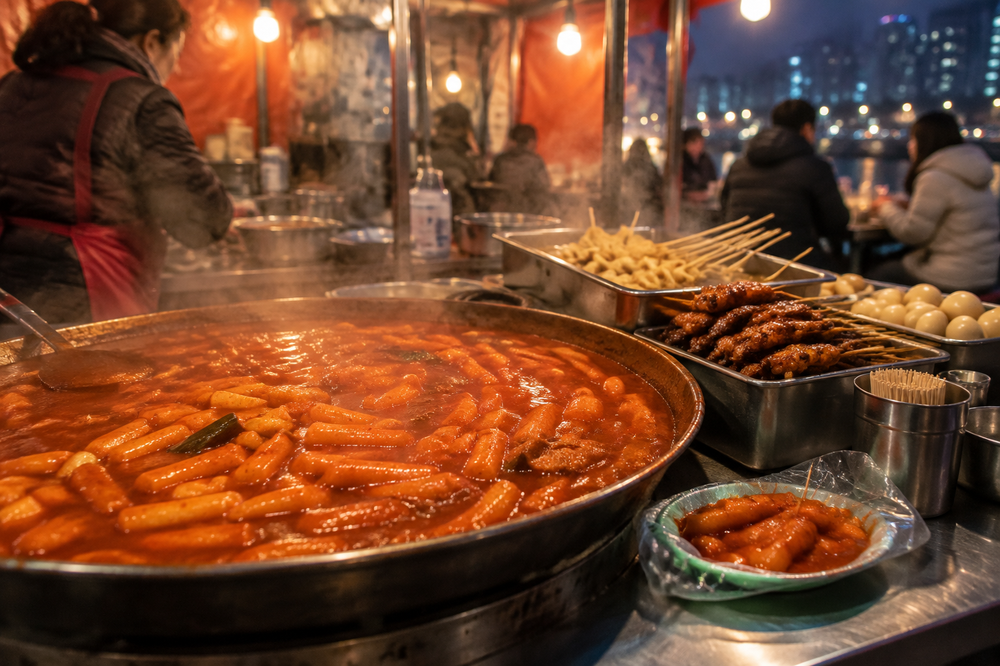
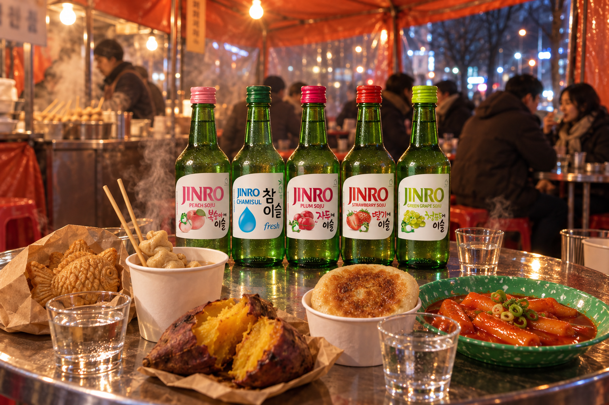

首爾天氣轉冷時：韓國人冬天最想吃的 5 種街頭小吃
從尋找鯛魚燒到烤地瓜，一起認識首爾轉涼時會出現的五種街頭小吃，以及最對味的 JINRO 搭配。
在首爾，一年之中第一個真正寒冷的星期，會掀起一場尋寶遊戲。目標是：賣著熱騰騰魚形點心的小推車。
韓國人甚至為「住在附近」發明了一個詞。「鯛魚燒勢圈」（Bungsegwon）改編自「站勢圈」（yeoksegwon，指靠近地鐵站的住處），意思是你家附近走幾步就有鯛魚燒攤。
這場尋寶也數位化了。每年冬天，韓國人氣社區 App「Karrot」都會開放一份由用戶共同建立的鯛魚燒地圖，大家可以標記附近的攤位，並留下簡短評價。
鯛魚燒只是開始。以下是五種天冷時值得尋找的街頭小吃，還有帶回家時可以搭配的 JINRO。

鯛魚燒尋寶怎麼玩？
鯛魚燒推車通常在天氣轉冷時出現，而且出乎意料地難找。這也是大家會互相分享位置的原因。
如果你在冷天造訪首爾，出門前先查一下地圖 App。有些小攤只收現金或銀行轉帳，身上帶點現金會比較方便。

1. 鯛魚燒（Bungeoppang）：最受歡迎的魚形點心
外皮酥脆、內裡鬆軟，這款魚形點心可說是韓國冬季街頭小吃的代表。
經典內餡是甜紅豆泥，另一個人氣口味是卡士達。兩派粉絲甚至各有暱稱：紅豆派叫「patbung」，卡士達派叫「shubung」。現在有些攤位也推出起司或披薩口味。
還不確定自己是哪一派？各點一個，親自決定吧。

2. 魚板（Eomuk）：泡在熱湯裡的魚板串
在清淡高湯裡燉煮的魚板串，是天冷時的必備小吃。很多攤位還能讓你自己舀一杯熱湯來喝。
先喝一口湯，再吃魚板。簡單的小吃，很快就能讓身體暖起來。

3. 烤地瓜（Goguma）
常在街頭的圓桶烤爐裡烤製，烤地瓜是最簡單的冬季小吃之一。外皮微微焦香，裡面則變得軟綿香甜。
趁熱剝開，直接連皮捧著吃。

4. 糖餅（Hotteok）：甜蜜內餡的煎餅
糖餅是一種煎烤的餅，內餡有黑糖、肉桂，常常還加了碎堅果或種子。內餡會融化成滾燙的糖漿，第一口請小心。
很多攤位會把它對折放在紙杯或紙套裡，邊走邊吃也很方便。

5. 辣炒年糕（Tteokbokki）：甜辣又有嚼勁
Q 彈的年糕裹著甜辣的韓式辣椒醬，一年四季都受歡迎，但在寒冷的夜晚來一盒熱騰騰的辣炒年糕，感覺特別對味。
再從同一個攤位加一兩串魚板，就是一頓快速的餐點。

為小吃搭配 JINRO
這些小吃從甜到鹹再到辣，各自適合不同的口味。如果想搭配 JINRO，選一款和小吃相配的口味，冰鎮後享用即可。
鯛魚燒 × JINRO Peach
JINRO Peach 的桃子風味，和紅豆泥的甜味很搭。
魚板 × JINRO Chamisul Fresh
JINRO Chamisul Fresh 口感清爽順口，適合溫和鮮美的高湯。
烤地瓜 × JINRO Plum
JINRO Plum 酸酸甜甜的風味，能平衡烤地瓜濃郁的甜味。
糖餅 × JINRO Strawberry
JINRO Strawberry 明亮的果香，為肉桂糖漿帶來清新的對比。
辣炒年糕 × JINRO Green Grape
JINRO Green Grape 為甜辣醬汁帶來清爽的果香。

開始你自己的小吃尋寶
不一定要在首爾才能體驗。許多城市的韓國超市和小吃店都買得到糖餅、辣炒年糕或魚形點心，尤其是天氣轉涼之後。
回家路上買一兩樣小吃，試試新的組合。有時候，一個寒冷的夜晚，就足以讓你找到新的最愛。
想探索更多韓國美食故事與 JINRO 搭配，歡迎追蹤 JINRO Global 官方 Instagram、Facebook 和 YouTube。
本文僅供已達法定飲酒年齡的讀者閱讀。請理性、適量享用 JINRO，切勿酒後駕車。